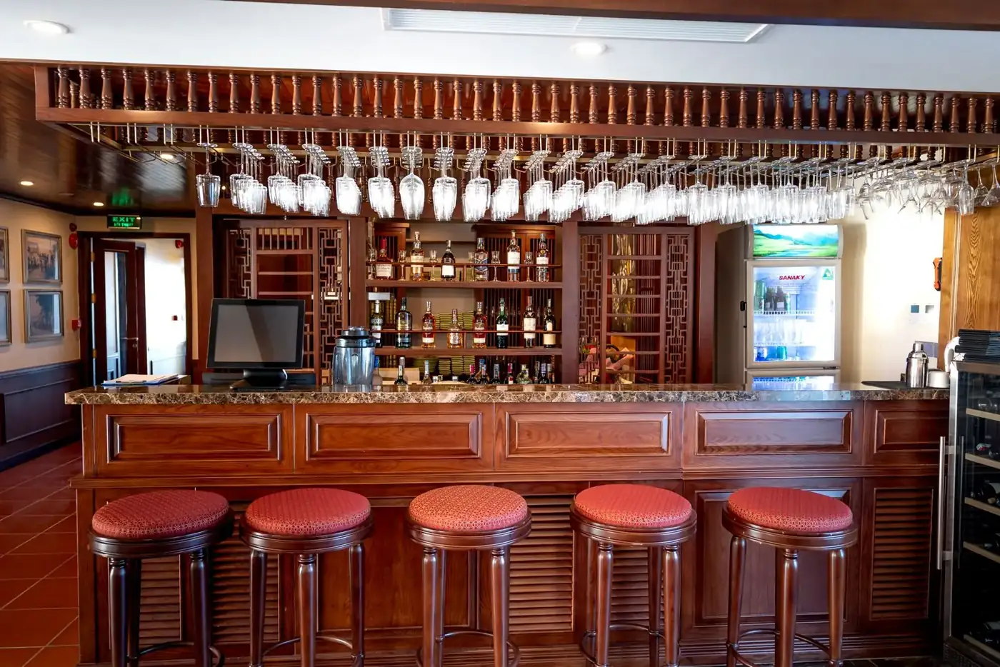
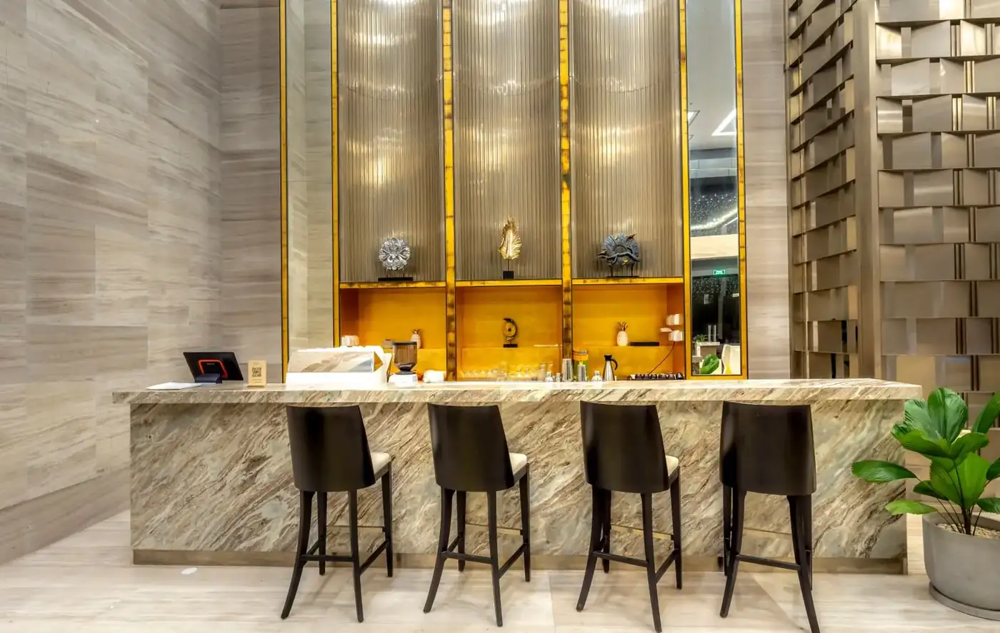
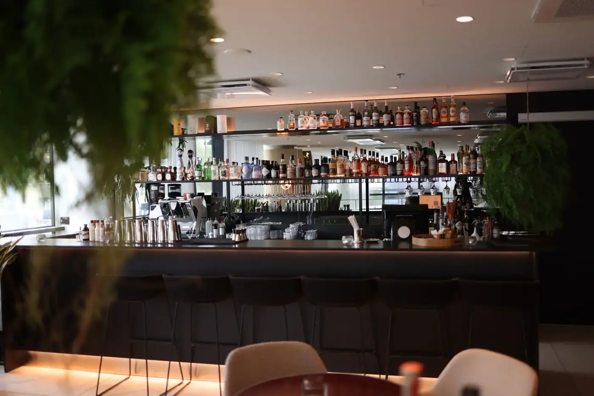
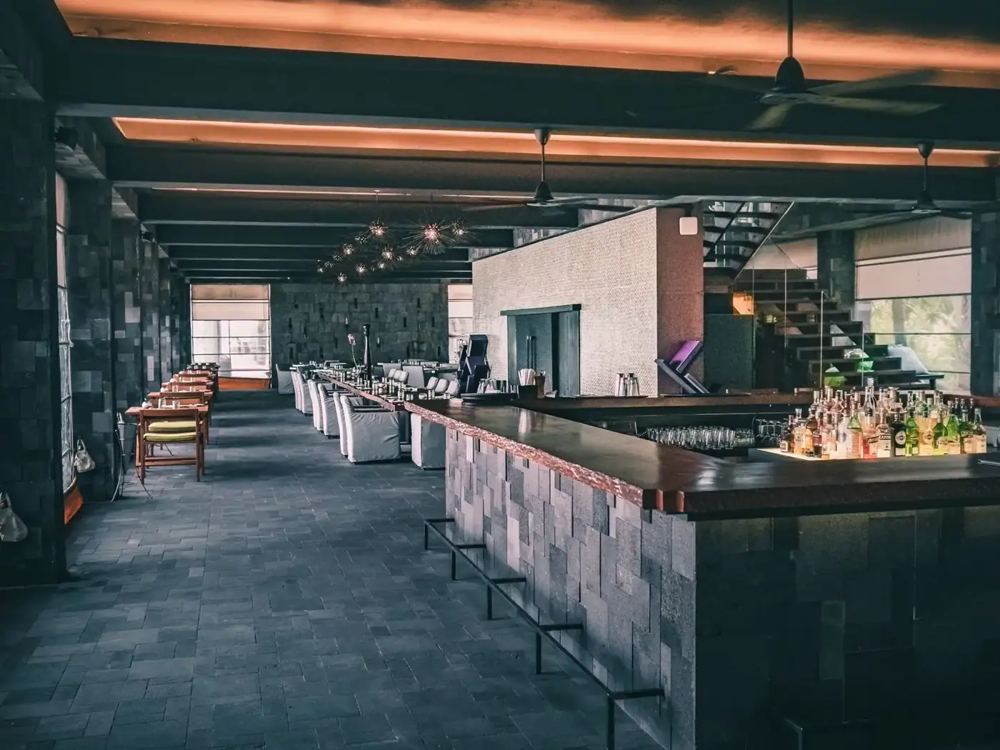
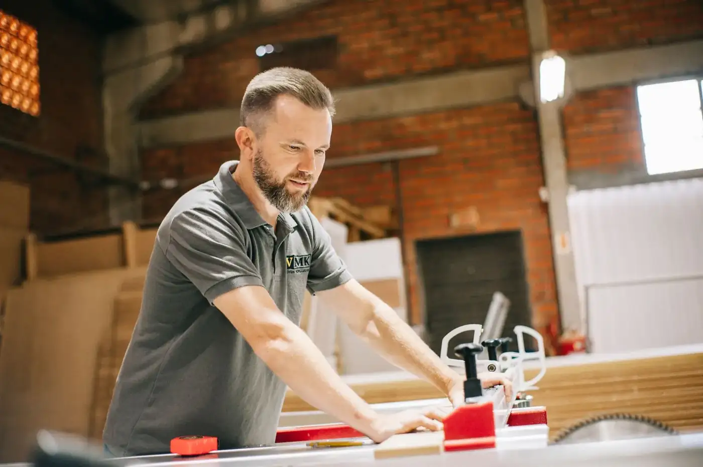

Shopfitting
Retail, restaurant and bar refits built and installed by professional joiners.
P K Joinery & Interiors Ltd · Sutton Coldfield, West Midlands
Shopfitting, Bespoke fittings, Refurbishment — Sutton Coldfield, West Midlands.
What we do
Retail, restaurant and bar refits built and installed by professional joiners.
Desks, counters and detailed interior fittings made to your specification.
Commercial and residential refurbishment across the UK.
Refurbishment of controlled areas to the required standard.
About
P K Joinery & Interiors Ltd provides high-quality joinery and shopfitting for retail units, restaurants and bars. Their specialists design, build and install anything from simple desks to detailed interior fittings, all made to your specifications from quality materials, with refurbishment services available across the UK.
Gallery
Sample imagery from Pexels standing in for P K Joinery & Interiors Ltd projects — to be replaced with real project photos.






Reviews
Service area
Enquire
Tell us about your project and we’ll get back to you.
Email: pkjoinery@btconnect.com
What this preview improves